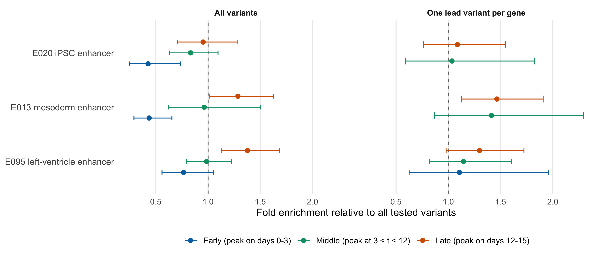
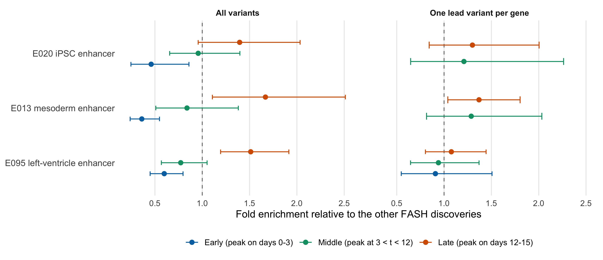
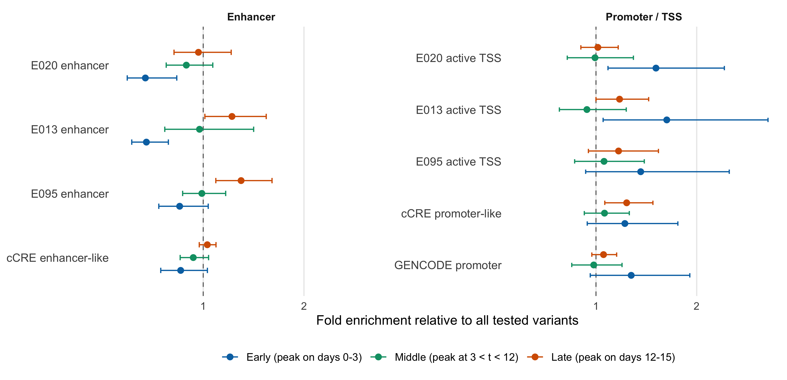
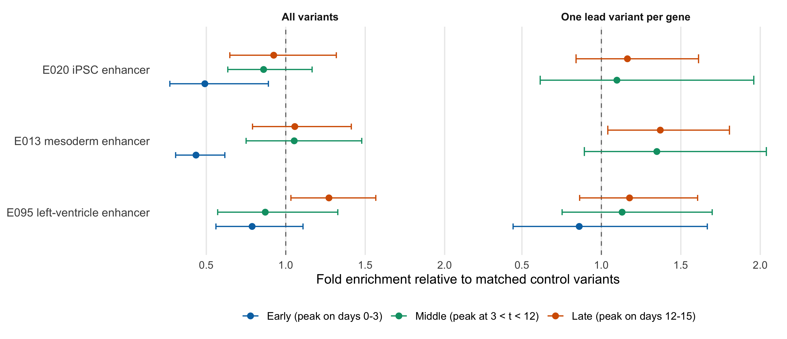

Last updated: 2026-08-26
Checks: 6 1
Knit directory: coderepo-local/
This reproducible R Markdown analysis was created with workflowr (version 1.7.2). The Checks tab describes the reproducibility checks that were applied when the results were created. The Past versions tab lists the development history.
The R Markdown is untracked by Git. To know which version of the R
Markdown file created these results, you’ll want to first commit it to
the Git repo. If you’re still working on the analysis, you can ignore
this warning. When you’re finished, you can run
wflow_publish to commit the R Markdown file and build the
HTML.
Great job! The global environment was empty. Objects defined in the global environment can affect the analysis in your R Markdown file in unknown ways. For reproduciblity it’s best to always run the code in an empty environment.
The command set.seed(20251109) was run prior to running
the code in the R Markdown file. Setting a seed ensures that any results
that rely on randomness, e.g. subsampling or permutations, are
reproducible.
Great job! Recording the operating system, R version, and package versions is critical for reproducibility.
Nice! There were no cached chunks for this analysis, so you can be confident that you successfully produced the results during this run.
Great job! Using relative paths to the files within your workflowr project makes it easier to run your code on other machines.
Great! You are using Git for version control. Tracking code development and connecting the code version to the results is critical for reproducibility.
The results in this page were generated with repository version 55cacb9. See the Past versions tab to see a history of the changes made to the R Markdown and HTML files.
Note that you need to be careful to ensure that all relevant files for
the analysis have been committed to Git prior to generating the results
(you can use wflow_publish or
wflow_git_commit). workflowr only checks the R Markdown
file, but you know if there are other scripts or data files that it
depends on. Below is the status of the Git repository when the results
were generated:
Ignored files:
Ignored: .DS_Store
Ignored: .Rhistory
Ignored: .Rproj.user/
Ignored: Rplots.pdf
Ignored: analysis/.DS_Store
Ignored: analysis/.Rhistory
Ignored: analysis/site_libs/
Ignored: code/.DS_Store
Ignored: code/.Rhistory
Ignored: code/revision_simulations/.DS_Store
Ignored: data/appendixB/
Ignored: data/dynamic_eQTL_real/
Ignored: data/revision_simulations/
Ignored: data/toy_example/
Ignored: output/dynamic_eQTL_real/
Ignored: output/pdf/
Ignored: output/playwright/
Ignored: output/revision_simulations/
Ignored: scripts/
Untracked files:
Untracked: analysis/revision_internal_fash_knockoff.rmd
Untracked: analysis/revision_internal_fash_temporal_class_enhancer_enrichment.rmd
Untracked: analysis/revision_internal_three_likelihood_comparison.rmd
Untracked: code/03_nonlindyn_lfsr.R
Untracked: code/03_nonlindyn_lfsr.sbatch
Untracked: code/revision_simulations/internal/fash_knockoff/reporting.R
Untracked: code/revision_simulations/internal/fash_knockoff/test_reporting.R
Untracked: code/revision_simulations/internal/fash_temporal_class_enhancer_enrichment/
Untracked: code/revision_simulations/internal/per_unit_expression_correlation/
Untracked: code/revision_simulations/r1_r2_fashr0143/source_snapshots/
Untracked: code/revision_simulations/r3_r4_fashr0143/21_r3_center_aligned_relative_location_paired_core.R
Untracked: code/revision_simulations/r3_r4_fashr0143/21_r3_center_aligned_relative_location_paired_fashr0143.R
Untracked: code/revision_simulations/r3_r4_fashr0143/21_r3_center_aligned_relative_location_paired_fashr0143.sbatch
Untracked: code/revision_simulations/r3_r4_fashr0143/source_snapshots/r3_center_aligned_relative_location_paired_driver.R
Untracked: code/revision_simulations/r3_r4_fashr0143/source_snapshots/r3_center_aligned_relative_location_paired_simulation_functions.R
Untracked: code/revision_simulations/r3_r4_fashr0143/test_r3_center_aligned_relative_location_paired.R
Untracked: code/revision_simulations/r4_correlated_errors/compute_full_model_residual_correlation.R
Untracked: code/revision_simulations/r4_correlated_errors/compute_pc_residual_expression_correlation.R
Unstaged changes:
Modified: analysis/dynamic_eQTL_real_full.rmd
Modified: analysis/nonlinear_dynamic_eQTL_real_full.rmd
Modified: analysis/revision_combined_spiky_genotype_simulation.rmd
Modified: analysis/revision_correlated_error_simulation.rmd
Modified: analysis/revision_enhancer_enrichment.rmd
Modified: analysis/revision_genotype_level_simulation.rmd
Modified: analysis/revision_internal_temporal_class_roadmap_enrichment.rmd
Deleted: code/02_dyn.R
Modified: code/02_dyn_lfsr.R
Modified: code/02_dyn_lfsr.sbatch
Deleted: code/03_nonlindyn.R
Modified: code/revision_simulations/README.md
Modified: code/revision_simulations/internal/fash_knockoff/plot_lfdr_histograms.R
Modified: code/revision_simulations/internal/fash_knockoff/plot_w_boxplot_by_discovery.R
Modified: code/revision_simulations/internal/fash_strober_enhancer_comparison/reporting.R
Modified: code/revision_simulations/internal/temporal_class_roadmap_enrichment/reporting.R
Modified: code/revision_simulations/internal/temporal_class_roadmap_enrichment/run_temporal_class_roadmap_enrichment.R
Modified: code/revision_simulations/internal/temporal_class_roadmap_enrichment/temporal_class_roadmap_helpers.R
Modified: code/revision_simulations/internal/temporal_class_roadmap_enrichment/test_temporal_class_roadmap_helpers.R
Modified: code/revision_simulations/r1_r2_fashr0143/reporting_overlay.R
Modified: code/revision_simulations/r4_correlated_errors/reporting.R
Modified: code/revision_simulations/r4_correlated_errors/test_unit_specific_residual_permutation_helpers.R
Modified: code/revision_simulations/r4_correlated_errors/unit_specific_residual_permutation_helpers.R
Staged changes:
New: analysis/revision_internal_temporal_class_roadmap_enrichment.rmd
New: code/revision_simulations/internal/temporal_class_roadmap_enrichment/reporting.R
New: code/revision_simulations/internal/temporal_class_roadmap_enrichment/run_temporal_class_roadmap_enrichment.R
New: code/revision_simulations/internal/temporal_class_roadmap_enrichment/temporal_class_roadmap_helpers.R
New: code/revision_simulations/internal/temporal_class_roadmap_enrichment/test_reporting.R
New: code/revision_simulations/internal/temporal_class_roadmap_enrichment/test_temporal_class_roadmap_helpers.R
Note that any generated files, e.g. HTML, png, CSS, etc., are not included in this status report because it is ok for generated content to have uncommitted changes.
There are no past versions. Publish this analysis with
wflow_publish() to start tracking its development.
The R6 page shows that FASH’s dynamic-eQTL discoveries fall inside Roadmap enhancers of this differentiation more often than the tested variants do. This page splits those same discoveries by when the effect peaks — early, middle, late — and asks whether the enrichment concentrates in a specific enhancer category.
The naive prediction is stage matching: early variants in E020 (iPSC) enhancers, middle in E013 (mesoderm), late in E095 (left ventricle). The answer below is that stage matching does not hold, but the temporal classes do differ sharply in which regulatory compartment they occupy.
Everything here is descriptive and exploratory. Nothing is refit: the
discovery set, the timing classification, and the enrichment machinery
all come from existing caches and from enrichment_api.R
unchanged.
The manuscript classifies a discovered pair by where the peak of \(|\beta(t)|\) falls in the 15-day time course, using the Strober-style functionals
\[ \text{early: } \sup_{t\le 3}|\beta(t)| - \sup_{t>3}|\beta(t)| > 0,\qquad \text{middle: } \sup_{3<t<12}|\beta(t)| - \sup_{t\le 3 \text{ or } t\ge 12}|\beta(t)| > 0, \] \[ \text{late: } \sup_{t\ge 12}|\beta(t)| - \sup_{t<12}|\beta(t)| > 0. \]
testing_functional() returns, for each functional, the
posterior probability that it is not positive (lfsr), so
\(1 - \texttt{lfsr}\) is the posterior
probability that the peak lies in that window. These are already cached
for the FASH-IWP1 fit in
output/dynamic_eQTL_real/classify_dyn_eQTLs_*.RData.
render_internal_table(
class_summary_display,
align = "lrrrrrr",
minimum_width = "980px"
)| Class | Discovered pairs | Unique variants | Unique genes | Median assignment probability | Pairs with cfsr <= 0.05 | Genes with cfsr <= 0.05 |
|---|---|---|---|---|---|---|
| Early (peak on days 0-3) | 1,157 | 1,157 | 140 | 0.66 | 126 | 8 |
| Middle (peak at 3 < t < 12) | 1,943 | 1,940 | 346 | 0.59 | 58 | 14 |
| Late (peak on days 12-15) | 6,114 | 6,062 | 936 | 0.67 | 21 | 11 |
The last two columns are why the assignment is by rank rather than by
a significance threshold. Applying the manuscript’s own
cfsr \(\le\) 0.05 cutoff
leaves only 126 early, 58 middle, and 21 late pairs, from 8, 14, and 11
genes respectively. Those sets are at or below the 10-overlap floor an
enrichment estimate needs, so a strict reading of the classification
cannot answer this question at all. The ranked assignment uses every
discovery and buys the power at the cost of calling many pairs whose
timing is uncertain; the confident-subset sensitivity below reruns the
analysis with a probability floor.
The class sizes are very unequal: the late class holds 6,114 of the 9,214 pairs. Read every comparison below with that in mind — the late class is close to the whole FASH discovery set, so its estimates reproduce the R6 numbers almost by construction, whereas the early class rests on 140 genes.
Same comparator, definition, and interval as the R6 page: fold enrichment is the overlap rate in the set divided by the overlap rate among all 745,867 tested autosomal variants, with the set excluded from its own comparator, and the bars are 22-block leave-one-autosome-out jackknife 95% intervals.
plot_background_enrichment()
Figure 1. Enhancer enrichment of the early, middle, and late FASH discovery classes relative to all tested variants, using every variant in the class (left) and one lead variant per gene (right). Annotations are the Roadmap 15-state ChromHMM enhancer states of the three epigenomes bracketing the differentiation. The dashed line marks no enrichment; bars are leave-one-autosome-out jackknife 95% intervals. Cells whose overlap fell below the floor of 10 variants are not plotted.
render_internal_table(
enrichment_display_table(background_enrichment),
align = "llrrr",
minimum_width = "980px"
)| Class | Selection | E020 iPSC enhancer | E013 mesoderm enhancer | E095 left-ventricle enhancer |
|---|---|---|---|---|
| Early (peak on days 0-3) | All variants | 0.43 (0.25-0.74) | 0.44 (0.29-0.65) | 0.77 (0.56-1.05) |
| Early (peak on days 0-3) | One lead variant per gene | not estimated | not estimated | 1.11 (0.62-1.96) |
| Middle (peak at 3 < t < 12) | All variants | 0.83 (0.63-1.09) | 0.96 (0.62-1.50) | 0.99 (0.80-1.22) |
| Middle (peak at 3 < t < 12) | One lead variant per gene | 1.03 (0.59-1.82) | 1.41 (0.87-2.29) | 1.15 (0.82-1.61) |
| Late (peak on days 12-15) | All variants | 0.95 (0.71-1.28) | 1.29 (1.02-1.63) | 1.38 (1.12-1.68) |
| Late (peak on days 12-15) | One lead variant per gene | 1.09 (0.76-1.55) | 1.46 (1.12-1.91) | 1.30 (0.98-1.72) |
Stage matching fails at the first row. The early class is depleted, not enriched, at the iPSC enhancers it was supposed to match: 0.43-fold (95% CI 0.25-0.74) at E020, and equally depleted at E013, 0.44-fold (95% CI 0.29-0.65). Its lead set is too small to estimate at E020 and E013 — not estimated (2 overlapping variants, below the floor of 10).
The late class carries the R6 signal: 1.29-fold (95% CI 1.02-1.63) at E013 and 1.38-fold (95% CI 1.12-1.68) at E095 using every variant, and 1.46-fold (95% CI 1.12-1.91) and 1.30-fold (95% CI 0.98-1.72) under lead selection. These sit close to the R6 estimates for the whole FASH lead set (1.47 at E013, 1.26 at E095), which is expected given that the late class is two thirds of the discoveries.
The middle class points at the mesoderm state under lead selection, 1.41-fold (95% CI 0.87-2.29), which is the largest estimate in its row and the one place where the stage-matched prediction is directionally supported — but the interval covers 1 and this is one contrast among eighteen.
Figure 1 compares each class with the whole testing universe, so a class inherits whatever enrichment FASH discoveries have in general. Replacing the comparator with the other 9,148 FASH-discovered variants asks the sharper question: given that a variant was discovered, does its timing class predict which enhancers it hits?
plot_within_discovery_enrichment()
Figure 2. The same three classes, now measured against the other FASH-discovered variants rather than against the full testing universe. A value above 1 means the class hits that enhancer state more often than the rest of FASH’s discoveries do.
render_internal_table(
enrichment_display_table(within_discovery_enrichment),
align = "llrrr",
minimum_width = "980px"
)| Class | Selection | E020 iPSC enhancer | E013 mesoderm enhancer | E095 left-ventricle enhancer |
|---|---|---|---|---|
| Early (peak on days 0-3) | All variants | 0.46 (0.25-0.86) | 0.36 (0.24-0.55) | 0.60 (0.45-0.80) |
| Early (peak on days 0-3) | One lead variant per gene | not estimated | not estimated | 0.91 (0.55-1.51) |
| Middle (peak at 3 < t < 12) | All variants | 0.96 (0.66-1.40) | 0.84 (0.51-1.38) | 0.77 (0.57-1.05) |
| Middle (peak at 3 < t < 12) | One lead variant per gene | 1.21 (0.65-2.26) | 1.29 (0.81-2.03) | 0.94 (0.65-1.37) |
| Late (peak on days 12-15) | All variants | 1.39 (0.96-2.03) | 1.67 (1.11-2.51) | 1.51 (1.19-1.91) |
| Late (peak on days 12-15) | One lead variant per gene | 1.30 (0.84-2.00) | 1.37 (1.04-1.80) | 1.08 (0.80-1.44) |
Timing does carry information, in one direction. Against its fellow discoveries the early class is depleted at all three states — 0.46-fold (95% CI 0.25-0.86) at E020, 0.36-fold (95% CI 0.24-0.55) at E013, 0.60-fold (95% CI 0.45-0.80) at E095 — and the late class is enriched, 1.67-fold (95% CI 1.11-2.51) at E013 and 1.51-fold (95% CI 1.19-1.91) at E095. The middle class is indistinguishable from the rest of the discoveries.
So the answer to “is there a specific enhancer category” is: not a stage-specific one. What separates the classes is enhancers versus everything else, and the separation runs late-enriched, early-depleted, in all three epigenomes at once.
An enhancer depletion is only interpretable next to the compartments the same variants do occupy. The panel below adds the cell-type-agnostic ENCODE cCRE enhancer-like annotation and the promoter/TSS annotations to the same all-variant comparison against the tested background.
plot_regulatory_context()
Figure 3. Regulatory context for the three classes, all-variant view, against the tested background. Left: enhancer annotations. Right: promoter and active-TSS annotations. The early class is displaced from enhancers towards promoters and active TSS; the late class shows the opposite tilt.
render_internal_table(
enrichment_display_table(context_enrichment, context_annotations),
align = "llrrrrrrrrr",
minimum_width = "1580px"
)| Class | Selection | E020 enhancer | E013 enhancer | E095 enhancer | cCRE enhancer-like | E020 active TSS | E013 active TSS | E095 active TSS | cCRE promoter-like | GENCODE promoter |
|---|---|---|---|---|---|---|---|---|---|---|
| Early (peak on days 0-3) | All variants | 0.43 (0.25-0.74) | 0.44 (0.29-0.65) | 0.77 (0.56-1.05) | 0.78 (0.58-1.04) | 1.60 (1.12-2.27) | 1.70 (1.07-2.71) | 1.44 (0.90-2.32) | 1.29 (0.91-1.81) | 1.35 (0.94-1.93) |
| Middle (peak at 3 < t < 12) | All variants | 0.83 (0.63-1.09) | 0.96 (0.62-1.50) | 0.99 (0.80-1.22) | 0.90 (0.77-1.05) | 0.99 (0.71-1.37) | 0.91 (0.64-1.30) | 1.08 (0.79-1.48) | 1.08 (0.88-1.33) | 0.98 (0.76-1.26) |
| Late (peak on days 12-15) | All variants | 0.95 (0.71-1.28) | 1.29 (1.02-1.63) | 1.38 (1.12-1.68) | 1.04 (0.96-1.13) | 1.02 (0.85-1.22) | 1.23 (1.00-1.52) | 1.22 (0.92-1.62) | 1.30 (1.09-1.57) | 1.07 (0.96-1.21) |
The early class is promoter-shifted: 1.60-fold (95% CI 1.12-2.27) at the E020 active-TSS state, 1.70-fold (95% CI 1.07-2.71) at the E013 active-TSS state, and 1.35-fold (95% CI 0.94-1.93) at GENCODE promoters, against 0.78-fold at cCRE enhancer-like elements. The late class shows the mirror pattern, with its enrichment on the enhancer side.
That is a coherent reading of the depletion rather than a contradiction of it: variants whose effect is strongest in the first three days sit disproportionately at promoters and active TSS of the starting epigenome, and the variants that drive the enhancer enrichment R6 reports are the ones whose effect peaks late.
The classes differ in allele frequency and TSS distance, and enhancers are themselves TSS-proximal, so the background comparison is confounded in principle. Repeating Figure 1 against matched controls — five comparable variants per selected variant on the MAF, TSS-distance, variant-density and tested-gene strata, pooled over 100 seeds, the sampler R6 retains but does not display — leaves the pattern intact.
plot_matched_enrichment()
Figure 4. Figure 1 recomputed against matched control variants instead of the raw tested background.
render_internal_table(
enrichment_display_table(matched_enrichment),
align = "llrrr",
minimum_width = "980px"
)| Class | Selection | E020 iPSC enhancer | E013 mesoderm enhancer | E095 left-ventricle enhancer |
|---|---|---|---|---|
| Early (peak on days 0-3) | All variants | 0.49 (0.27-0.89) | 0.44 (0.31-0.62) | 0.79 (0.56-1.11) |
| Early (peak on days 0-3) | One lead variant per gene | not estimated | not estimated | 0.86 (0.44-1.67) |
| Middle (peak at 3 < t < 12) | All variants | 0.86 (0.64-1.17) | 1.05 (0.75-1.48) | 0.87 (0.57-1.33) |
| Middle (peak at 3 < t < 12) | One lead variant per gene | 1.10 (0.62-1.96) | 1.35 (0.89-2.04) | 1.13 (0.75-1.70) |
| Late (peak on days 12-15) | All variants | 0.92 (0.65-1.32) | 1.06 (0.79-1.41) | 1.27 (1.03-1.57) |
| Late (peak on days 12-15) | One lead variant per gene | 1.16 (0.84-1.61) | 1.37 (1.04-1.81) | 1.18 (0.86-1.61) |
The early depletion survives matching: 0.44-fold (95% CI 0.31-0.62) at E013 and 0.49-fold (95% CI 0.27-0.89) at E020, against 0.44-fold and 0.43-fold unmatched. It is not an artefact of the early class sitting closer to a TSS.
Restricting to pairs whose winning window probability is at least 0.7 keeps 523 early, 443 middle, and 2,451 late variants.
render_internal_table(
enrichment_display_table(confident_enrichment),
align = "llrrr",
minimum_width = "980px"
)| Class | Selection | E020 iPSC enhancer | E013 mesoderm enhancer | E095 left-ventricle enhancer |
|---|---|---|---|---|
| Early (peak on days 0-3) | All variants | not estimated | 0.43 (0.24-0.77) | 0.86 (0.43-1.71) |
| Early (peak on days 0-3) | One lead variant per gene | not estimated | not estimated | not estimated |
| Middle (peak at 3 < t < 12) | All variants | not estimated | 1.77 (0.93-3.37) | 0.76 (0.46-1.27) |
| Middle (peak at 3 < t < 12) | One lead variant per gene | not estimated | 2.24 (1.03-4.86) | not estimated |
| Late (peak on days 12-15) | All variants | 0.86 (0.59-1.26) | 1.21 (0.88-1.65) | 1.39 (0.99-1.95) |
| Late (peak on days 12-15) | One lead variant per gene | 1.13 (0.83-1.55) | 1.58 (1.14-2.19) | 1.69 (1.28-2.22) |
Most early cells fall below the overlap floor at this stringency, so the early depletion cannot be re-checked here. Among what survives, the stage-matched reading looks slightly better than it does in the full assignment: the middle lead set reaches 2.24-fold (95% CI 1.03-4.86) at the mesoderm state, and the late lead set 1.69-fold (95% CI 1.28-2.22) at the left-ventricle state. Both are single post-hoc contrasts on small sets with wide intervals and neither is corrected for the number of comparisons on this page; they are worth a follow-up, not a claim.
cfsr \(\le\) 0.05 the three classes hold 126, 58,
and 21 pairs, which no annotation-overlap analysis can use.Rscript --vanilla \
code/revision_simulations/internal/fash_temporal_class_enhancer_enrichment/test_temporal_class_helpers.R
Rscript --vanilla \
code/revision_simulations/internal/fash_temporal_class_enhancer_enrichment/test_reporting.R
Rscript --vanilla -e \
'workflowr::wflow_build("analysis/revision_internal_fash_temporal_class_enhancer_enrichment.rmd")'Page-specific source files:
code/revision_simulations/internal/fash_temporal_class_enhancer_enrichment/temporal_class_helpers.Rcode/revision_simulations/internal/fash_temporal_class_enhancer_enrichment/test_temporal_class_helpers.Rcode/revision_simulations/internal/fash_temporal_class_enhancer_enrichment/reporting.Rcode/revision_simulations/internal/fash_temporal_class_enhancer_enrichment/test_reporting.RCached inputs, neither of them produced here:
output/revision_simulations/internal/fash_strober_enhancer_comparison_fashr0143/discovery_pair_tables.rds
(R6 discovery sets)output/dynamic_eQTL_real/classify_dyn_eQTLs_{early,middle,late}.RData
(testing_functional() results reproducible from
code/02_dyn_lfsr.R)output/revision_simulations/internal/variant_annotation_enrichment/
(annotation matrix and matching covariates)
sessionInfo()R version 4.5.1 (2025-06-13)
Platform: aarch64-apple-darwin20
Running under: macOS Sequoia 15.6.1
Matrix products: default
BLAS: /System/Library/Frameworks/Accelerate.framework/Versions/A/Frameworks/vecLib.framework/Versions/A/libBLAS.dylib
LAPACK: /Library/Frameworks/R.framework/Versions/4.5-arm64/Resources/lib/libRlapack.dylib; LAPACK version 3.12.1
locale:
[1] C.UTF-8/C.UTF-8/C.UTF-8/C/C.UTF-8/C.UTF-8
time zone: America/Chicago
tzcode source: internal
attached base packages:
[1] stats graphics grDevices utils datasets methods base
loaded via a namespace (and not attached):
[1] gtable_0.3.6 jsonlite_2.0.0 dplyr_1.1.4 compiler_4.5.1
[5] promises_1.5.0 tidyselect_1.2.1 Rcpp_1.1.1-1.1 stringr_1.6.0
[9] git2r_0.36.2 dichromat_2.0-0.1 later_1.4.4 jquerylib_0.1.4
[13] scales_1.4.0 yaml_2.3.12 fastmap_1.2.0 ggplot2_4.0.3
[17] R6_2.6.1 labeling_0.4.3 generics_0.1.4 workflowr_1.7.2
[21] knitr_1.50 tibble_3.3.0 rprojroot_2.1.1 bslib_0.9.0
[25] pillar_1.11.1 RColorBrewer_1.1-3 rlang_1.2.0 cachem_1.1.0
[29] stringi_1.8.9 httpuv_1.6.16 xfun_0.55 S7_0.2.2
[33] fs_1.6.6 sass_0.4.10 otel_0.2.0 cli_3.6.6
[37] withr_3.0.3 magrittr_2.0.5 digest_0.6.39 grid_4.5.1
[41] rstudioapi_0.17.1 lifecycle_1.0.5 vctrs_0.7.3 evaluate_1.0.5
[45] glue_1.8.1 farver_2.1.2 rmarkdown_2.30 tools_4.5.1
[49] pkgconfig_2.0.3 htmltools_0.5.9